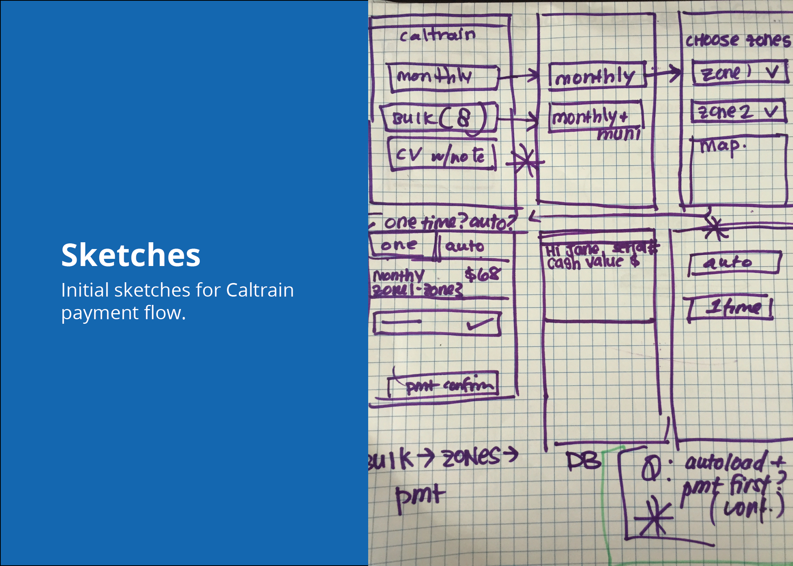
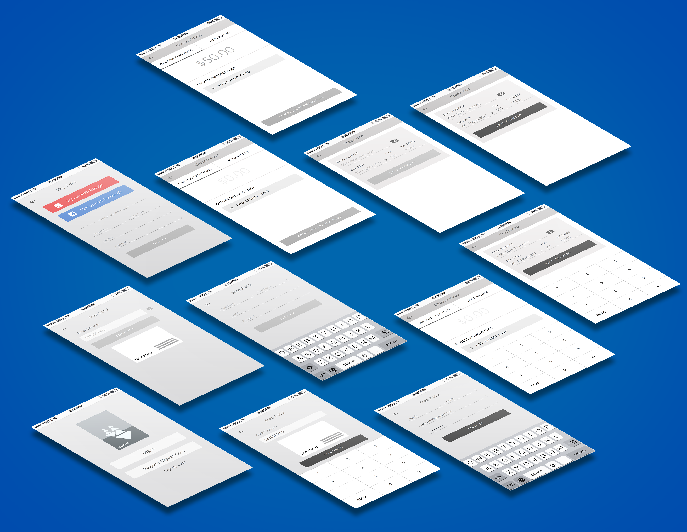

Clipper
Mobile Application
Team Members: Jenny Ng, Vani Mehta, and Vasavi Reddy
My Role: User Experience and Visual Design
The Problem: Adding money on to your Clipper card can be a long and confusing process. My team and I decided to create a mobile application to simplify this process.
The Research Phase
We first started tackling this problem by viewing the current Clipper card payment process for different transit services. We soon realized how convoluted the data got, as different transit services had different buckets on your Clipper Card.
We then viewed several forums online, and talked to various Clipper card users to try to understand their frustrations with the current process. Using their feedback, we went into creating user flows that simplified the current payment process.
The Ideation Phase
From here, my partners and I went into many sketch sessions. We would all seperately sketch out our ideas and then come together to combine them. Once we flushed out all of our ideas, we went into creating our initial wireframes and prototype.

Initial Sketches
Initial Sketches
The Iteration Phase
Using our prototype, we conducted a lot of usability testing to get an idea of what was working within the app and what wasn't. We got a lot of great feedback, and using this information, we decided to take a new route and went back to sketching, wireframing, and prototyping.
After iterating on our initial wirefames and prototype, we conducted more usability testing. Using the feedback from this round of testing, we went back and made more changes to our wireframes.
